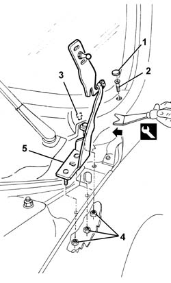

7025A18 l/h or r/h bonnet lid hinge (one) - r+r with lid removed
- Path
- Procedures > 70 FITTINGS > 7025 COMPARTMENT LIDS > 7025A bonnet lid > 7025A18 l/h or r/h bonnet lid hinge (one) - r+r with lid removed
- Kind
- repair procedure (removal / refitting; the operation number is the code)
- Applies to
- all engines; all production periods
- Interactive page
- https://sloeber94.github.io/elrnDB-a147/en/#/3025753
Applies to: engines: 1.9 JTD 16V; all production periods
 Removing
Removing
 Refitting
RefittingApplies to: engines: 1.9 JTD 16V; all production periods
7055B64 Engine compartment DUST shield in front wheel arch (one), left or right - R.R. (right and left).
7055B42 Additional FRONT WHEEL ARCH (one), left or right - R.R. (right and left).
1. Remove the cover.
2. Undo the bolt.
3. Release the first inner retainer using the special tool.
 | Name | Country |
|---|---|---|
3 | Scraper blade | 1.823.015.000 |
4. Unscrew the nuts.
5. Remove the hinge.

Applies to: all engines; all production periods
Refitting
RemovingCheck that the hinge is undamaged.
Fit the hinge and screw in the nuts without tightening them.
With the bonnet fitted, adjust the hinge positions. 7025A10 bonnet lid - square
Applies to: engines: 1.9 JTD 16V; all production periods